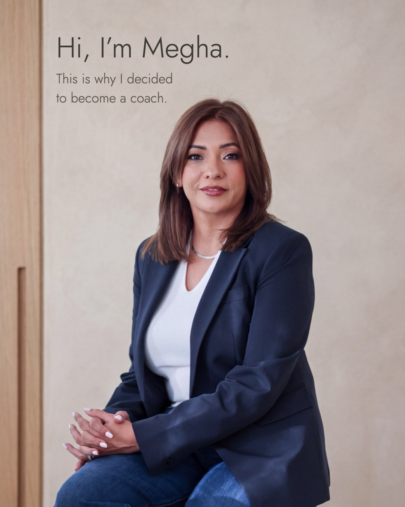

Mon 9 Nov · Single photo
 meghabhallaDubai···
meghabhallaDubai···
meghabhallaHi, I’m Megha, and this is why I decided to become a coach.
I spent 25 years leading people. Fourteen in banking, then thirteen building Traveazy, where we grew from ten people to more than 300 through a pandemic and two mergers.
What stayed with me wasn’t the growth. It was the people. Capable, accomplished people quietly questioning their choices, unsure if the path they were on was still theirs.
Most of them didn’t need another answer from me. They needed room to find their own.
Coaching gave me a way to offer that. This is my next chapter, and I’m glad you’re here for it.
Planned for Mon 9 Nov